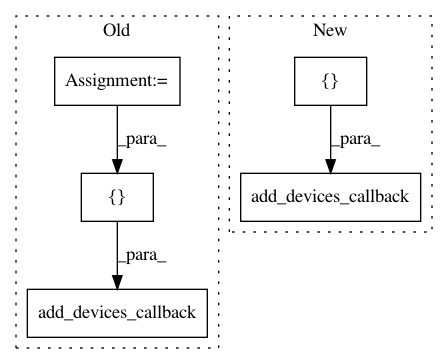

18ca7b4f9e3d3186384a5b95a1ba0be7ea1d87a9,homeassistant/components/switch/orvibo.py,,setup_platform,#Any#Any#Any#Any#,19
Before Change
_LOGGER.error("Missing required variable: host")
return
try:
s20 = S20(config.get("host"))
add_devices_callback([S20Switch(config.get("name", DEFAULT_NAME),
s20)])
except S20Exception:
_LOGGER.exception("S20 couldn"t be initialized")
After Change
Find and return S20 switches.
from orvibo.s20 import S20, S20Exception
switches = []
switch_conf = config.get("switches", [config])
for switch in switch_conf:
if switch.get("host") is None:
_LOGGER.error("Missing required variable: host")
continue
host = switch.get("host")
try:
switches.append(S20Switch(switch.get("name", DEFAULT_NAME),
S20(host)))
_LOGGER.info("Initialized S20 at %s", host)
except S20Exception:
_LOGGER.exception("S20 at %s couldn"t be initialized",
host)
add_devices_callback(switches)
class S20Switch(SwitchDevice):
Represents an S20 switch.
In pattern: SUPERPATTERN
Frequency: 3
Non-data size: 5
Instances
Project Name: home-assistant/home-assistant
Commit Name: 18ca7b4f9e3d3186384a5b95a1ba0be7ea1d87a9
Time: 2015-11-29
Author: happyleaves.tfr@gmail.com
File Name: homeassistant/components/switch/orvibo.py
Class Name:
Method Name: setup_platform
Project Name: home-assistant/home-assistant
Commit Name: aec25c88b42d8471c084656504e0a5da287ce7a1
Time: 2015-07-10
Author: paulus@paulusschoutsen.nl
File Name: homeassistant/components/camera/generic.py
Class Name:
Method Name: setup_platform
Project Name: home-assistant/home-assistant
Commit Name: 71546035678c357360d4da96cacd6b3005e59719
Time: 2016-04-26
Author: Cinntax@users.noreply.github.com
File Name: homeassistant/components/switch/pulseaudio_loopback.py
Class Name:
Method Name: setup_platform